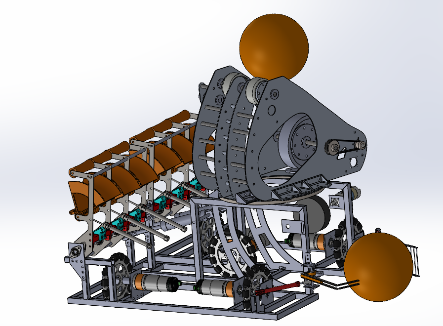
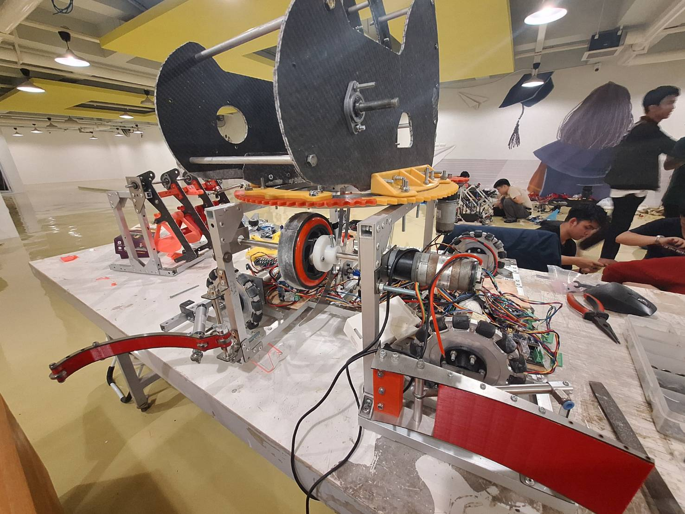
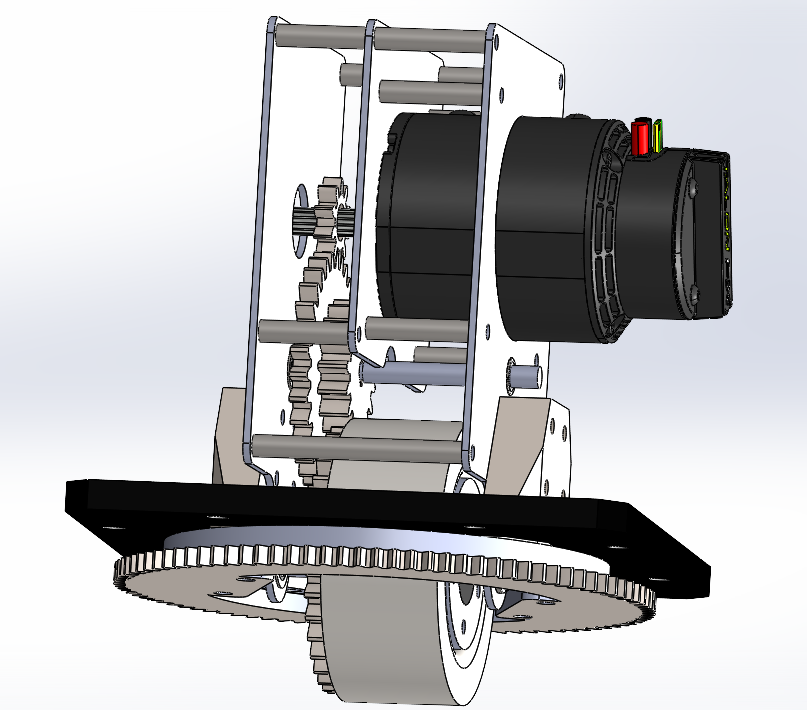
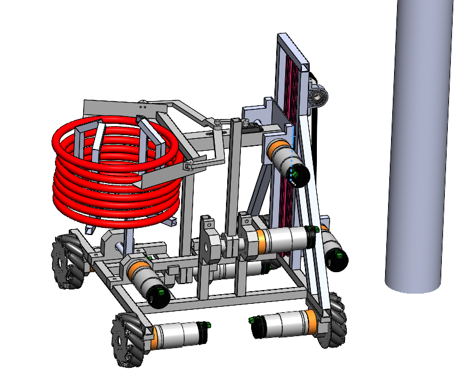
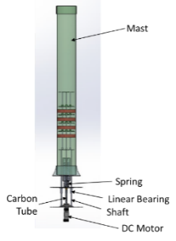
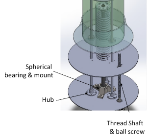
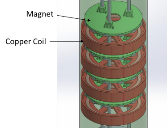

2 projects
Competition projects
Mechanical design, integration, and teamwork through robotics and energy projects.
ABU Robocon / KRAI
Led mechanical design and mechanism development, coordinating integration across a 15-member mechanical, electrical, and control team to build competition robots.




Vorione Bladeless Wind Turbine
Led mechanical design and vibration analysis for a resonance-based wind-energy prototype, coordinating manufacturing and system integration.


